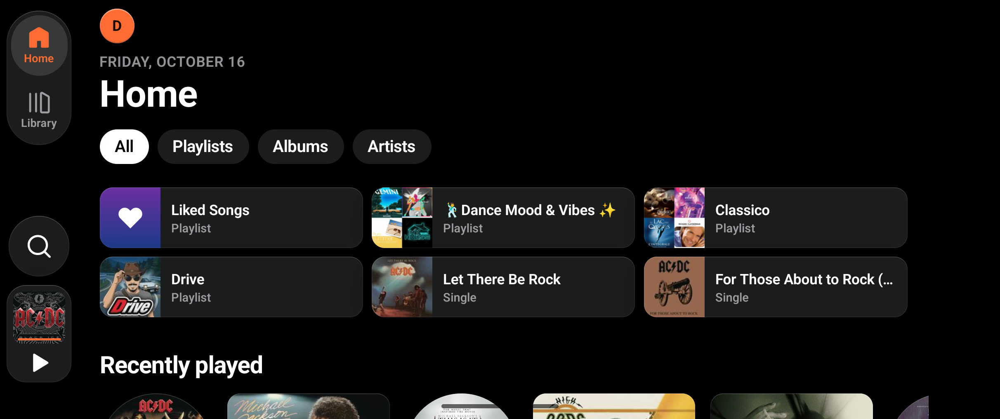
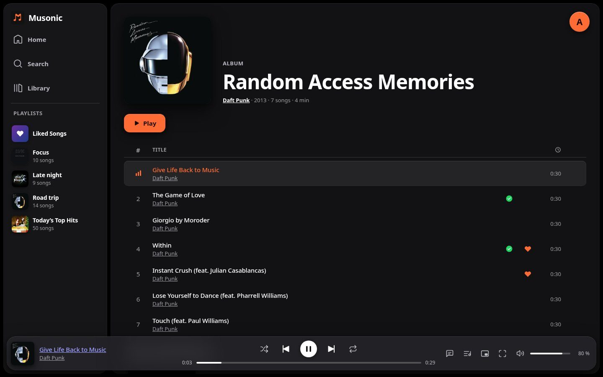
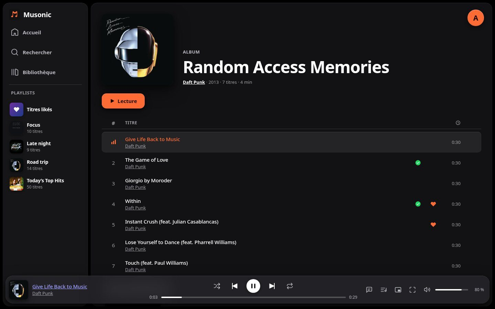

Your music, your server.Votre musique, votre serveur.
A calm music app on your phone and in your browser, and a server to host your library yourself. No account, no ads, nothing but your music. Une app de musique sobre sur votre téléphone et dans votre navigateur, et un serveur pour héberger votre bibliothèque vous-même. Sans compte, sans pub, juste votre musique.
Mobile appApplication mobile · Android 7 or later, free and open sourceAndroid 7 ou plus récent, gratuit et open source
Three parts, one MusonicTrois parties, un seul Musonic

Mobile appApplication mobile
Android and iOS: synced lyrics, Magic Mixes, offline downloads, Android Auto.Android et iOS : paroles synchronisées, Mix Magiques, téléchargements hors ligne, Android Auto.
DiscoverDécouvrir →

Web
The whole Musonic in your browser, nothing to install. Import your Spotify and Deezer playlists.Tout Musonic dans votre navigateur, rien à installer. Importez vos playlists Spotify et Deezer.
DiscoverDécouvrir →

ServerServeur
Host your music yourself, with an online catalogue, real-time sync and an administration console.Hébergez votre musique vous-même, avec un catalogue en ligne, la synchro en temps réel et une console d'administration.
DiscoverDécouvrir →